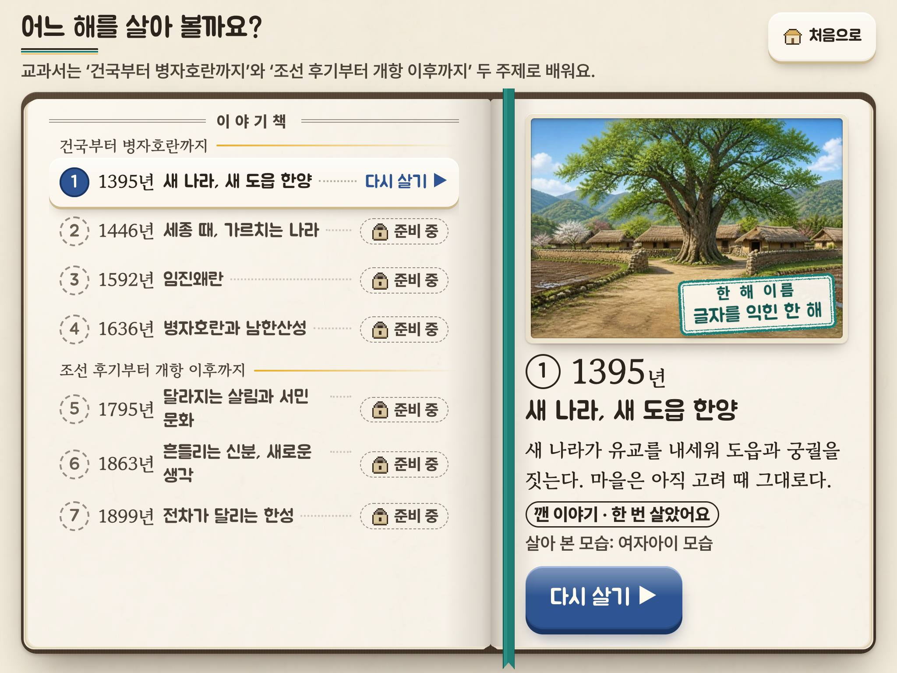

<!doctype html>
<html lang="ko">
  <head>
    <meta charset="utf-8" />
    <meta name="viewport" content="width=1200" />
    <title>이야기책 시안 — 모아 찍기</title>
    <!-- sheet.jpg와 before-after.jpg를 찍는 쪽(?k=sheet-a|sheet-b|sheet-c|before-after). 1200×? @2로 찍는다 -->
    <link rel="stylesheet" href="../../../src/styles/fonts.css" />
    <style>
      body {
        margin: 0;
        width: 1200px;
        background: #efe7d6;
        color: #2b241d;
        font-family: 'Pretendard', sans-serif;
        font-weight: 600;
      }
      .wrap {
        padding: 22px 24px 26px;
      }
      h1 {
        margin: 0;
        font: 400 30px/1.2 'Jua', 'Pretendard', sans-serif;
      }
      .one {
        margin: 6px 0 14px;
        font: 700 18px/1.5 'Gowun Batang', serif;
        color: #4b4137;
      }
      .score {
        display: inline-block;
        margin-left: 10px;
        padding: 2px 10px;
        border-radius: 999px;
        background: #2e5591;
        color: #fffaf0;
        font: 800 16px/1.5 'Pretendard', sans-serif;
        vertical-align: 4px;
      }
      .grid {
        display: grid;
        grid-template-columns: 1fr 1fr;
        gap: 14px 16px;
      }
      figure {
        margin: 0;
      }
      figure img {
        display: block;
        width: 100%;
        border-radius: 8px;
        box-shadow: 0 1px 2px rgba(58, 38, 18, 0.2), 0 10px 24px -10px rgba(58, 38, 18, 0.45);
      }
      figcaption {
        margin-top: 6px;
        font-size: 15px;
        color: #4b4137;
      }
      .ba {
        display: grid;
        grid-template-columns: 1fr auto 1fr;
        align-items: center;
        gap: 12px;
      }
      .arrow {
        font: 400 34px/1 'Jua', sans-serif;
        color: #6a5e50;
      }
      .tag {
        display: inline-block;
        margin-bottom: 6px;
        padding: 2px 10px;
        border-radius: 999px;
        font-size: 16px;
        font-weight: 800;
      }
      .tag.now {
        background: #e0d2b3;
      }
      .tag.new {
        background: #2e5591;
        color: #fffaf0;
      }
      ul {
        margin: 12px 0 0;
        padding-left: 18px;
        font-size: 15px;
        line-height: 1.6;
        color: #4b4137;
      }
      .cols {
        display: grid;
        grid-template-columns: 1fr 1fr;
        gap: 0 34px;
      }
    </style>
  </head>
  <body>
    <div class="wrap" id="out"></div>
    <script>
      const k = new URLSearchParams(location.search).get('k') || 'sheet-a';
      const M = {
        a: { name: '시안 A 「펼친 이야기책」', one: '이야기책을 정말 펼친 책으로 — 왼쪽 면은 일곱 이야기의 목차, 오른쪽 면은 지금 살 이야기의 그림 표지와 쪽빛 단추.', score: '진단 8 → 23 (권함)' },
        b: { name: '시안 B 「일곱 폭 병풍」', one: '일곱 이야기가 한 벌의 병풍으로 이어 선다 — 지금 살 이야기 한 폭만 활짝 펴져 그림을 보이고, 나머지는 접힌 폭에 세로쓰기 제목.', score: '진단 8 → 20' },
        c: { name: '시안 C 「연표 두루마리」', one: '두루마리 위 연표에 일곱 해가 놓인다 — 금빛 시간 줄의 점까지 먹줄이 내려가 해와 해의 거리가 보이고, 모든 소개 글이 다 보인다(옆으로 넘김).', score: '진단 8 → 20' },
      };
      const out = document.getElementById('out');
      const fig = (src, cap) => `<figure><figcaption>${cap}</figcaption></figure>`;
      if (k.startsWith('sheet-')) {
        const m = k.slice(6);
        const d = M[m];
        out.innerHTML = `
          <h1>${d.name}<span class="score">${d.score}</span></h1>
          <p class="one">${d.one}</p>
          <div class="grid">
            ${fig(`${m}/shots/${m}-ga-1180x820@2.jpg`, '(가) 처음 — ①만 열림 · 1180×820')}
            ${fig(`${m}/shots/${m}-na-1180x820@2.jpg`, '(나) ①을 한 번 깸 — 한 해 이름 도장 · 1180×820')}
            ${fig(`${m}/shots/${m}-da-1180x820@2.jpg`, '(다) 앞날 — ①② 열림, ①은 두 번 깸 · 1180×820')}
            ${fig(`${m}/shots/${m}-parts-1180x820@2.jpg`, '(라) 부품 — 기본·누름·초점·잠김, 도장')}
            ${fig(`${m}/shots/${m}-na-1366x650@1.jpg`, '(나) 1366×650 — 낮고 넓은 PC 창')}
            ${fig(`${m}/shots/${m}-na-1920x1080@1.jpg`, '(나) 1920×1080 — 교실 TV')}
          </div>`;
      } else {
        out.innerHTML = `
          <h1>이야기책 — 지금과 권하는 시안 A<span class="score">진단 8 → 23</span></h1>
          <p class="one">같은 상태((나) ①을 한 번 깸), 같은 화면(1024×768, 화소 비율 2). 글은 한 글자도 바꾸지 않았다.</p>
          <div class="ba">
            <figure><span class="tag now">지금(커밋 da608ab)</span></figure>
            <span class="arrow">▶</span>
            <figure><span class="tag new">시안 A 「펼친 이야기책」</span></figure>
          </div>
          <div class="cols">
            <ul>
              <li>같은 상자 일곱(먹 테·점선) → 펼친 책 한 권: 목차와 그림 표지</li>
              <li>누를 곳이 한눈에: 쪽빛 단추 하나(시안 B·㉠과 같은 색)</li>
              <li>붉은 도장 → 뇌록 도장, 그림 위에 낙관처럼(spec 1.2)</li>
            </ul>
            <ul>
              <li>그림: 지금 있는 ①의 채색화(마을 어귀 봄)를 다시 씀 — 새 그림 없음</li>
              <li>빛 하나(왼쪽 위): 접힌 곳 그늘, 떠 있는 액자, 겹친 종이 결</li>
              <li>교과서의 두 주제가 목차의 갈피가 됨(안내 줄의 말 그대로)</li>
            </ul>
          </div>`;
      }
    </script>
  </body>
</html>
